Chapter 4 Wykresy :)
##
## If anything, there should be a Law: Thou Shalt Not Even Think Of Producing A
## Graph That Looks Like Anything From A Spreadsheet.
## -- Ted Harding (in a discussion about producing graphics)
## R-help (August 2007)Do tworzenia wykresów można użyć kilku pakietów:
graphics - podstawowy pakiet graficzny instalowany razem z R, pełna kontrola nad wyglądem wykresu, ale często wymaga to więcej pracy niż w innych pakietach. Przydatny jeżeli chcemy coś szybko sprawdzić, a nie interesuje nas wygląd wykresu, niektóre wykresy można stworzyć tylko w tym pakiecie
lattice - umożliwia łatwe tworzenie kilku wykresów na raz np. do porównania różnych cech, ale obecnie mniej popularny niż np. ggplot2
ggplot2 - jeden z najpopularniejszych pakietów R i mój ulubiony do przygotowywania wykresów. Oparty na grammar of graphics. Przygotowanie “ładnych” wykresów wymaga mniej pracy niż w podstawowym, ale składnia jest znacząco różna. Łatwe porównywanie i tworzenie kilku wykresów na jednym obrazku
plotly - pozwala na tworzenie interaktywnych wykresów np. do wykorzystania na stronach www lub w shiny. Pakiet ggplotly umożliwia konwersję wykresów ggplot do postaci interaktywnej
4.1 ggplot2
Wykresy w ggplot2 składają się z kilku elementów: data, aesthetics, geom, scale, facet, theme itd.
Pierwsze trzy są niezbędne do przygotowania wykresu.
Poszczególne elementy można ze sobą łączyć na różne sposoby, co pozwala w prosty sposób robić bardzo różne wykresy.
Podstawowa funkcja : ggplot(). W niej określany jest tylko data i aesthetic, pozostałe elementy dodawane są przy pomocy +
data - określa ramkę danych, na podstawie której będzie przygotowany wykres, najlepiej żeby była w formacie ‘tidy’
aesthetics (aes) - pokazuje (mapuje), które kolumny mają być wykorzystane np. x=kolumna_1 dla histogramu, można też określać pod względem których zmiennych dane mają zostać pogrupowane (group), rozróżnione (color, fill, shape itp) np. aes(x = kolumna_1, color = kolumna_2) znaczy że dane z kolumny_1 zostaną wykorzystane do stowrzenia osi X, a dane z kolumny_2 posłużą do stowrzenia skali kolorów.
geom - rodzaj wykresu - to co widzimy - np histogram, density, bar, boxplot, point, line itp., można użyć kilka jednocześnie np. point i line, histogram i density
scale - osie wykresu np. czy mają być logarytmiczne, procentowe, miejsce start i koniec, ale też skale kolorów, wypełnienia, kształtów itp.
facet - umożliwia podział wykresu na kilka mniejszych pod względem danej zmiennej
theme - wygląd poszczególnych elementów wykresu (motyw) np. czcionki, rodzaj linii, kolor tła, legenda itp., istnieje sporo już przygotowanych. Można przygotować własny i zapisać - łatwo można zrobić kilka wykresów w jednym stylu
Istnieje również funkcja qplot, która jest podobna do funkcji plot w podstawowym R, ale jej możliwości są uboższe w porównaniu z ggplot.
Wykresy ggplot są przypisywane do zmiennych np p <- ggplot(...), zmienna p przechowuje wszystkie dane dotyczące wykresu. Możemy je sprawdzić funkcją summary. Dodanie kolejnych elementów do wykresu np. p + geom_point(), jeżeli chcemy nadpisać dotychczasowy wykres - p <- p + geom_point(). Korzystając z + możemy dodawać tyle elementów ile chcemy.
4.1.1 Używane dane
Dane 1 opisują jakąś cechę zmierzoną dla trzech szczepów w dwóch rodzajach warunków.
library(ggplot2) # ładujemy niezbędne pakiety
library(dplyr)##
## Attaching package: 'dplyr'## The following objects are masked from 'package:stats':
##
## filter, lag## The following objects are masked from 'package:base':
##
## intersect, setdiff, setequal, uniondane1 <- read.table("data/dane1.txt", header = TRUE, quote = "\"")
head(dane1)## pomiar Szczep warunki
## 1 3.389738 A 1
## 2 5.992065 A 1
## 3 4.464553 A 1
## 4 4.546082 A 1
## 5 6.521751 A 1
## 6 5.713088 A 1Dane 2 zawierają ten sam zestaw szczepów i warunków, ale tym razem zostały one podzielone na 4 grupy: tak, nie, może i NA (brak danych).
dane2 <- read.table("data/dane2.txt", header = TRUE, quote = "\"")
head(dane2)## pomiar Szczep warunki
## 1 Tak A 1
## 2 Nie A 1
## 3 Tak A 1
## 4 Tak A 1
## 5 <NA> A 1
## 6 Tak A 1summary(dane2)## pomiar Szczep warunki
## Length:1200 Length:1200 Min. :1.0
## Class :character Class :character 1st Qu.:1.0
## Mode :character Mode :character Median :1.5
## Mean :1.5
## 3rd Qu.:2.0
## Max. :2.0Dane 3 to wzrost dwóch szczepów w trzech powtórzeniach w czasie 1-100.
dane3 <- read.table("data/dane3.txt", header = TRUE, quote = "\"")
head(dane3)## pomiar Szczep powt czas
## 1 0.09639497 A 1 1
## 2 0.11830818 A 1 2
## 3 0.11839652 A 1 3
## 4 0.13904646 A 1 4
## 5 0.15544315 A 1 5
## 6 0.13080412 A 1 6summary(dane3)## pomiar Szczep powt czas
## Min. :0.09175 Length:1200 Min. :1 Min. : 1.00
## 1st Qu.:0.33428 Class :character 1st Qu.:1 1st Qu.: 25.75
## Median :0.52688 Mode :character Median :2 Median : 50.50
## Mean :0.54175 Mean :2 Mean : 50.50
## 3rd Qu.:0.74753 3rd Qu.:3 3rd Qu.: 75.25
## Max. :1.10474 Max. :3 Max. :100.00Dane tego typu możemy przedstawić jako wykres np. liniowy, punktowy, ribbon (liniowy z zaznaczonym błędem, przedziałem ufności itp.).
4.1.2 Wykresy jednowymiarowe - histogram, boxplot i inne
4.1.2.1 Histogram i density
theme_set(theme_bw()) # żeby wszystkie wykresy miały białe tło, a nie szare - będzie o tym później
dane1_1 <- subset(dane1, Szczep == "A" & warunki == "1")
p <- ggplot(data = dane1_1, aes(x = pomiar))
p + geom_histogram()## `stat_bin()` using `bins = 30`. Pick better value with `binwidth`.
Dla histogramu najważniejszy parametr to binwidth określający szerokość “słupków.”
Możemy też wybrać czy chcemy żeby były zliczane ilości elementów (domyślnie), czy ma być pokazana gęstość rozkładu - w aes należy wpisać y=..density.. albo procenty y=((..count..)/sum(..count..))*100 (w przypadku procentów lepiej jednak policzyć je wcześniej i podać już gotowe wartości do ggplot, w bardziej skomplikowanych przypadkach ggplot może sobie nie poradzić). Do dodania znaków % potrzebna jest zmiana parametrów osi, o tym później.
Można też zmienić kolor wypełnienia słupków - fill lub kolor linii - color.
p + geom_histogram(binwidth = 0.5)
# Histogram z gęstością na osi Y
p + geom_histogram(binwidth = 0.5, aes(y = ..density..))
# Histogram z wartością % na osi Y
p + geom_histogram(binwidth = 0.5, aes(y = ((..count..)/sum(..count..)*100)))
# Zmiana koloru wypełnienia histogramu
p + geom_histogram(binwidth = 0.5, aes(y = ..density..),
fill = "lightgreen", color = "black")
# Dodanie wszystkich obserwacji do wykresu - geom_rug()
p + geom_histogram(binwidth = 0.5, aes(y = ..density..),
fill = "lightgreen", color = "black")+
geom_rug()
Histogram możemy łatwo zmienić na geom_density (gęstość) albo połączyć oba na jednym wykresie (należy pamiętać żeby ujednolicić oś Y - w histogramie ustawić y=..density.. albo w density y = ..count..)
Wykresy gęstości są dużo czytelniejsze od histogramów przy większej liczbie grup/kolorów na wykresie.
p + geom_density()
# Wykres łączący histogram i gęstość
p + geom_histogram(binwidth = 0.5, aes(y = ..density..))+
geom_density(color = "red")
# albo tak, ale wtedy trzeba count w density podzielić przez coś - konkretną liczbę lepiej dobrać indywidualnie do każdego wykresu
p + geom_histogram(binwidth = 0.5)+
geom_density(color = "red", aes(y = ..count../2))
# Zamiast density można też użyć geom_freqpoly, który da bardziej "kanciasty" wykres
# Wymaga parametru binwidth tak samo jak histogram
p + geom_freqpoly(binwidth = 0.5)
4.1.2.2 Wykres pudełkowy - boxplot
Na wykresie pudełkowym linia obrazuje medianę, pudełko to przestrzeń między 1 i 3 kwantylem, wąsy to zakres danych, a wszystkie punkty to obserwacje odstające.
Zamiast histogramu możemy zrobić boxplot, w tym wypadku x to nazwa szczepu, a y to mierzona cecha. Na osi X należy zawsze umieszczać zmienną jakościową, a na osi Y zmienną ilościową
# pojedynczy boxplot
p <- ggplot(data = dane1_1, aes(x = "Szczep A", y = pomiar))
p + geom_boxplot()
# boxplot dla każdej kategorii
p <- ggplot(data = dane1, aes(x = Szczep, y = pomiar))
p + geom_boxplot()
# do boxplota można dodać wcięcia, jeżeli wcięcia dwóch boxplotów na siebie nie zachodzą
# można uznać że mediany tych dwóch grup są od siebie znacząco różne
p + geom_boxplot(notch = TRUE)
4.1.2.3 Wykres skrzypcowy
Odmianą boxplotów są tzw. wykresy skrzypcowe, które pozwalają też na pokazanie kształtu rozkładu - pozwala to np. na wykrycie rozkładu, który ma dwa maksima. W ggplot2 można je wygenerować funkcją geom_violin.
p <- ggplot(data=dane1, aes(x = Szczep, y = pomiar))
p + geom_violin(aes(color = factor(warunki)))
# przykładowe dane
dane <- data.frame(x = c(rnorm(100), rnorm(100, 3), rnorm(100, 1), rnorm(100, 5)),
faktor = rep(c("A", "B"), each = 200))
p <- ggplot(data = dane, aes(y = x, x = faktor, fill = faktor))
p + geom_violin()
# nie przyciety wykres
p + geom_violin(trim=FALSE)
4.1.2.4 Dodanie wszystkich obserwacji do boxplot/violin
Dobrą praktyką jest przy używaniu wykresów pudełkowych lub skrzypcowych pokazanie wszystkich uzyskanych obserwacji (o ile nie ma ich za dużo). Można w tym celu użyć funkcji geom_jitter albo ładniejszych geom_beeswarm i geom_quasirandom z pakietu ggbeeswarm.
Przy pomocy argumentu alpha można kontrolować przezroczystość punktów - przydatne gdy jest ich dużo.
dane1_2 <- dane1 %>% filter(warunki == 1)
# Boxplot dla każdego szczepu
p <- ggplot(data = dane1_2, aes(x = Szczep, y = pomiar))
p + geom_boxplot(aes(color = Szczep))+
geom_jitter(aes(color = Szczep), alpha = 0.2)# usuwamy punkty pochodzące od boxplota
p + geom_boxplot(aes(color = Szczep), outlier.alpha = 0)+
geom_jitter(aes(color = Szczep), alpha = 0.2)
# beeswarm
library(ggbeeswarm)
p + geom_boxplot(aes(color = Szczep), outlier.alpha = 0)+
geom_beeswarm(aes(color = Szczep), alpha = 0.2)
# quasirandom
p + geom_boxplot(aes(color = Szczep), outlier.alpha = 0)+
geom_quasirandom(aes(color = Szczep), alpha = 0.2)
# quasirandom + geom_violin
p <- ggplot(data=dane1, aes(x = Szczep, y = pomiar))
p + geom_violin(aes(color = factor(warunki)))+
geom_quasirandom(aes(color = factor(warunki)),
dodge.width = 0.9, # pozwala na rodział kolorów na dwie grupy
alpha = 0.1)
Można też połączyć wszystko w całość korzystając z dodatkowych pakietów ggdist i gghalves, na podstawie strony: visualizing-distributions-with-raincloud-plots-with-ggplot2
ggplot(dane1_2, aes(x = Szczep, y = pomiar, color = Szczep, fill = Szczep)) +
ggdist::stat_halfeye(
adjust = .5,
width = .6,
.width = 0,
justification = -.2,
point_colour = NA
) +
geom_boxplot(
width = .15,
outlier.shape = NA,
alpha = 0.2
) +
## add justified jitter from the {gghalves} package
gghalves::geom_half_point(
## draw jitter on the left
side = "l",
## control range of jitter
range_scale = .4,
## add some transparency
alpha = .3
) 4.1.2.5 Dotplot
Wykres, na którym obserwacje są zaznaczane jako punkty, może być alternatywą dla histogramu albo gęstości jeżeli mamy małą liczbę danych. Punkty mogą być układane na którejś z osi albo wyśrodkowane. Podobnie jak w histogramie możemy określić parametrem binwidth jak mają być ułożone punkty.
dane_dot <- data.frame(pomiar = c(rnorm(20), rlnorm(20), runif(20)),
kategoria = rep(c("A","B","C"), each = 20))
p <- ggplot(dane_dot)
p + geom_dotplot(aes(x = pomiar))## Bin width defaults to 1/30 of the range of the data. Pick better value with `binwidth`.p + geom_dotplot(aes(x = pomiar), binwidth = 0.25)# możemy kropki pokolorować według kategorii,
# konieczne parametry stackgroups=TRUE i binpositions="all"
p + geom_dotplot(aes(x = pomiar, fill = kategoria), binpositions = "all", stackgroups = TRUE)## Bin width defaults to 1/30 of the range of the data. Pick better value with `binwidth`.
# albo przedstawić każdą kategorię osobno, binaxis określa w jakim kierunku układać kropki,
# stackdir czy mają być wyśrodkowane - center lub centerwhole
p + geom_dotplot(aes(y = pomiar, x = kategoria), stackdir = "center", binaxis = "y", binwidth = 0.2)# zmiana wielkości kropki przez dotsize
p + geom_dotplot(aes(y = pomiar, x = kategoria), stackdir = "center", binaxis = "y",
binwidth = 0.2, dotsize = 0.75)
# można też wybrać metodę układania kropek, domyślnie wedle gęstości,
# podobnie jak histogram - method="histodot"
p + geom_dotplot(aes(y = pomiar, x = kategoria), stackdir = "center", binaxis = "y",
binwidth = 0.2, dotsize = 0.75, method = "histodot")
4.1.3 Barplot - wykres słupkowy
Szybkie zliczenie elementów w poszczególnych grupach możemy wykonać stosując funkcję table. Wystarczy podać jej kolumnę z danymi oraz kolumny zawierające wektory według których dane mają zostać podzielone na grupy. Wynikiem table nie jest ramka danych, więc bez przekształcenia nie można go użyć do przygotowania wykresu ggplot.
table(dane2$pomiar)##
## Może Nie Tak
## 224 469 437table(dane2$pomiar, dane2$Szczep, dane2$warunki)## , , = 1
##
##
## A B C
## Może 19 25 38
## Nie 68 94 123
## Tak 94 71 21
##
## , , = 2
##
##
## A B C
## Może 51 23 68
## Nie 15 67 102
## Tak 134 93 24Można zauważyć, że funkcja table, w przeciwieństwie do summary pominęła wartości oznaczone jako NA. Można to zmienić używając parametr useNA.
table(dane2$pomiar, dane2$Szczep, dane2$warunki, useNA = "ifany")## , , = 1
##
##
## A B C
## Może 19 25 38
## Nie 68 94 123
## Tak 94 71 21
## <NA> 19 10 18
##
## , , = 2
##
##
## A B C
## Może 51 23 68
## Nie 15 67 102
## Tak 134 93 24
## <NA> 0 17 6Wykres słupkowy wymaga użycia geom_bar. Zasady rozróżniania zmiennych według kolorów i dzielenia wykresów na części pozostają takie same.
Domyślnie również wartości NA zostaną wzięte pod uwagę podczas zliczania. Jeżeli chcemy temu zapobiec, należałoby np. usunąć je wcześniej przy pomocy funkcji filter.
p <- ggplot(data = dane2, aes(x = pomiar, fill = Szczep))
# Słupki ustawione obok siebie
p + geom_bar(position = "dodge") + facet_wrap(~ warunki)
# Wszystkie słupki tej samej wysokości
p + geom_bar(position = "fill") + facet_wrap(~ warunki)# Szerokość słupków można zmieniać parametrem width
p + geom_bar(position = "dodge", width = 0.4) + facet_wrap(~ warunki)# Wykres bez wartości NA, filter można zrobić też wcześniej albo w obrębie ggplot
p <- ggplot(dane2 %>% filter(!is.na(pomiar)), aes(x = pomiar, fill = Szczep))
p + geom_bar(position = "dodge") + facet_wrap(~ warunki)Przy dużej ilości różnokolorowych słupków wykres może być trudny do odczytania. Można wtedy rozważyć zastosowanie dotchart - czyli wykresu na którym wartości zliczenia są oznaczane przez pojedyncze punkty, a nie przez wysokość słupków. W ggplot2 do zrobienia dotchart możemy użyć geom_point
# Ustawiamy stat="bin" - oznacza że ggplot ma zliczyć częstości występowania elementów,
# a nie narysować każdy z osobna i obracamy wykres - ułatwia odczytanie
p + geom_point(size=3, stat='count', aes(color=Szczep))+
facet_wrap(~warunki)+coord_flip()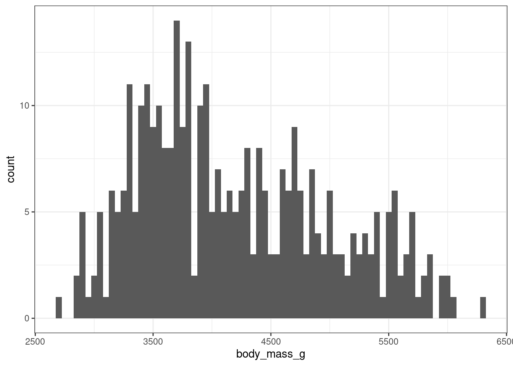
Nasze dane mogą też zawierać wysokości słupków. W takim wypadku należy użyć geom_col
x <- data.frame(x = c(2, 6, 3, 8, 9), name = c("A", "B", "C", "D", "E"))
p <- ggplot(data = x, aes(x = name, y = x))
p + geom_col(aes(fill = name))
4.1.4 Średnia, mediana itp na wykresie
4.1.4.1 Stat_summary
Możemy również potrzebować wykres z zaznaczoną średnią i przedziałem ufności albo błędem standardowym.
W takim wypadku możemy sami policzyć te wartości, a następnie pokazać je używając geom_pointrange albo geom_crossbar.
Można też wykorzystać stat_summary, który policzy je za nas.
W stat_summary najważniejszym argumentem jest funkcja jaką zastosujemy do podsumowania danych. Może to być albo fun.y - należy podać funckję, której wynikiem jest jedna wartość np. mean, median, sd albo fun.data - należy podać funkcję, której wynikiem jest więcej wartości np. mean_cl_boot i mean_cl_normal policzą średnią i przedział ufności. Należy też dobrać odpowiedni geom: dla jednej wartości np. point albo line, dla większej: linerange, crossbar, pointrange, errorbar.
p <- ggplot(data=dane1, aes(x=Szczep, y=pomiar, color=Szczep))
# Wykres tylko z wartością średnią
p + stat_summary(fun = "mean", geom = "point", size = 3)+
facet_wrap(~ warunki, ncol = 2)
# Wykres ze średnią i przedziałem ufności policzonym metodą bootstrap
p + stat_summary(fun.data = "mean_cl_boot")+
facet_wrap(~ warunki, ncol = 2)
4.1.4.2 Summary z użyciem dplyr
Do samodzielnego policzenia średnich możemy wykorzystać pakiet dplyr. Pozwala on m.in. na szybkie tworzenie podsumowań danych ze względu na zmienne np. różne szczepy.
Najpierw dane są dzielone na grupy, następnie każda grupa jest poddawana działaniu pewnej funkcji lub kilku funkcji, a wynik jest zapisywany do nowej ramki danych.
W pakiecie dplyr pierwszym krokiem jest podział na grupy - group_by i potem przekazania wyniku do funkcji summarize.
library(dplyr)
summ <- dane1 %>% group_by(Szczep, warunki) %>%
summarize(mean = mean(pomiar), odch = sd(pomiar),
blad = odch/sqrt(length(pomiar)),
lower = mean-blad,
upper = mean+blad)## `summarise()` has grouped output by 'Szczep'. You can override using the `.groups` argument.summ## # A tibble: 6 × 7
## # Groups: Szczep [3]
## Szczep warunki mean odch blad lower upper
## <chr> <int> <dbl> <dbl> <dbl> <dbl> <dbl>
## 1 A 1 4.98 0.973 0.0562 4.93 5.04
## 2 A 2 3.96 0.748 0.0432 3.92 4.00
## 3 B 1 6.02 1.43 0.0828 5.93 6.10
## 4 B 2 6.07 1.13 0.0654 6.00 6.13
## 5 C 1 5.96 1.85 0.107 5.85 6.07
## 6 C 2 8.08 3.40 0.196 7.89 8.28p <- ggplot(data = summ, aes(x = Szczep, y = mean, ymin = lower, ymax = upper,
color = Szczep)) + facet_wrap(~ warunki, ncol = 2)
# Wykres ze średnią i błędem standardowym
p + geom_pointrange()
p + geom_crossbar(width = 0.5)
p + geom_errorbar(width = 0.5, color = "black") + geom_point()
# Z wykresem przedstawiającym średnie można postąpić tak samo jak z boxplotem
p <- ggplot(data = summ, aes(x = Szczep, y = mean, ymin = lower, ymax = upper,
color=factor(warunki)))
p + geom_crossbar(width = 0.5, position = "dodge")# Jeżeli średnie połączymy za pomocą linii otrzymamy wykres interakcji opisany w dalszej części
p <- ggplot(data = summ, aes(x = Szczep, y = mean, color = factor(warunki)))
p + geom_point() + geom_line(aes(group = warunki))4.1.4.3 Słupki błędów
W publikacja często spotyka się wykresy słupkowe z dodanym słupkiem błędu. Podobny efekt w ggplot2 można uzyskać przy pomocy geom_errorbar albo geom_linerange. Należy w aes podać dolną i górną granicę słupka. Jednak jeżeli słupki pochodzą np. z trzech powtórzeń danego eksperymentu to może lepiej byłoby je zaznaczyć w postaci kropek z przedziałem ufności niż rysować słupki.
Wartość średnią i ewentualny błąd standardowy albo przedział ufności możemy policzyć sami albo wykorzystać w tym celu stat_summary.
# Przykładowe dane
dane <- data.frame(kontrola = c(3,7,6), eksp_1 = c(5,9,7.5), eksp_2 = c(3,1,6), eksp_3 = c(10,11,8), eksp_4 = c(1,12,4))
# przechodzimy do formatu tidy
library(tidyr)
dane %>% pivot_longer(cols = everything(), names_to = 'key', values_to = 'value') -> dane
head(dane)## # A tibble: 6 × 2
## key value
## <chr> <dbl>
## 1 kontrola 3
## 2 eksp_1 5
## 3 eksp_2 3
## 4 eksp_3 10
## 5 eksp_4 1
## 6 kontrola 7# liczymy średnią i np. błąd standardowy
podsumowanie <- dane %>% group_by(key) %>%
summarize( srednia = mean(value),
odchylenie = sd(value),
dolny = srednia-(odchylenie/sqrt(length(value))),
gorny = srednia+(odchylenie/sqrt(length(value))))
# Wykres słupkowy z zaznaczonym błędem standardowym
p <- ggplot(data = podsumowanie)
p + geom_col(aes(x = key, y = srednia), fill = "lightblue3")+
geom_errorbar(aes(ymin = dolny, ymax = gorny, x = key), width = 0.2)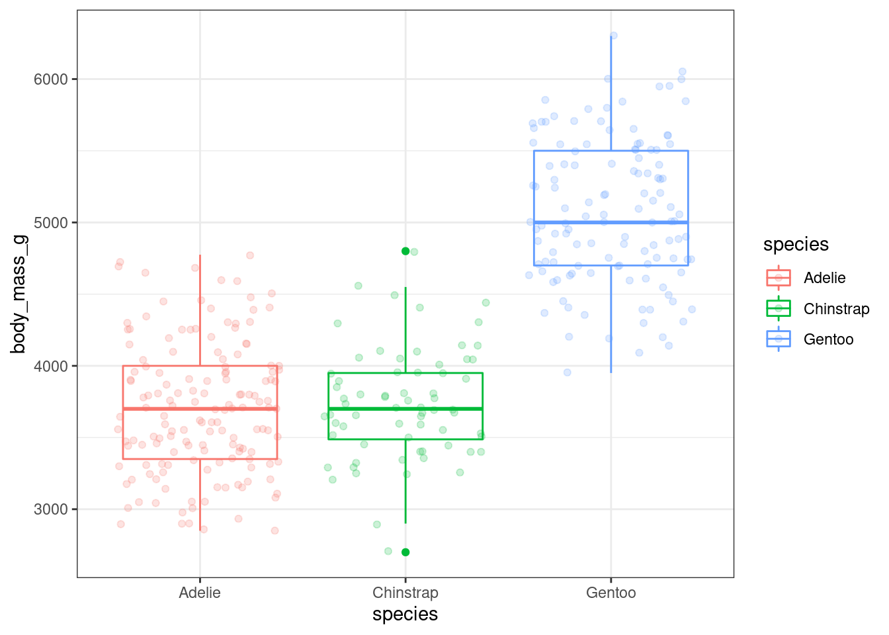
p + geom_col(aes(x = key, y = srednia), fill = "lightblue3")+
geom_linerange(aes(ymin = dolny, ymax = gorny, x = key))
# Wykres punktowy wyników z zaznaczonym błędem standardowym
p + geom_point(data = dane, aes(x = key, y = value))+
geom_pointrange(aes(x = key, ymin = dolny, ymax = gorny, y = srednia), col = "red2")
p + geom_point(data = dane, aes(x = key, y = value))+
geom_crossbar(aes(x = key, ymin = dolny, ymax = gorny, y = srednia), col = "red2", width = 0.25)
p + geom_point(data = dane, aes(x = key, y = value))+
geom_errorbar(aes(x = key, ymin = dolny, ymax = gorny, y = srednia), col = "red2", width = 0.25)
4.1.5 Wykres punktowy i liniowy
Zacznijmy od pojedynczego pomiaru szczepu A z dane3
Dla geom_point albo geom_line konieczne jest w aes podanie x i y.
dane3_1 <- filter(dane3, Szczep == "A" , powt == "1")
p <- ggplot(data = dane3_1, aes(x = czas, y = pomiar))
p + geom_point()
p + geom_line()4.1.5.1 Dopasowanie linii trendu do wykresu punktowego
Zamiast rysować linię, możemy dopasować do wyników linię trendu (może być też inna niż liniowa np. logarytmiczna, kwadratowa, ograniczają nas tylko umiejętności pisania formuł w R ;)). Dopasowanie wykona stat_smooth. Domyślnie dopasuje linię do danych korzystając z własnego algorytmu (loess - lokalne wygładzanie wielomianami niskich stopni ;)), który ma za zadanie uzyskać jak najlepsze dopasowanie do danych, zaznaczy również przedział ufności. Możemy narzucić własną metodę i formułę.
# metoda loess
p + geom_point() + stat_smooth()## `geom_smooth()` using method = 'loess' and formula 'y ~ x'
# metoda lm - dopasowanie do linii prostej
p + geom_point() + stat_smooth(method = "lm")## `geom_smooth()` using formula 'y ~ x'
# metoda lm z podaną formułą
p + geom_point() + stat_smooth(method = "lm", formula = y~log(x))+
stat_smooth(method = "lm", color = "red")## `geom_smooth()` using formula 'y ~ x'
Sprawdzenie dopasowania można wykonać funkcją lm. Jej summary podaje wartośc R^2, istotność, parametry wzoru(coefficients).
summary(lm(pomiar~czas, data=dane3_1))##
## Call:
## lm(formula = pomiar ~ czas, data = dane3_1)
##
## Residuals:
## Min 1Q Median 3Q Max
## -0.094113 -0.014337 0.009274 0.023692 0.055815
##
## Coefficients:
## Estimate Std. Error t value Pr(>|t|)
## (Intercept) 6.352e-02 4.631e-03 13.72 <2e-16 ***
## czas 1.027e-02 7.962e-05 128.97 <2e-16 ***
## ---
## Signif. codes: 0 '***' 0.001 '**' 0.01 '*' 0.05 '.' 0.1 ' ' 1
##
## Residual standard error: 0.0325 on 198 degrees of freedom
## Multiple R-squared: 0.9882, Adjusted R-squared: 0.9882
## F-statistic: 1.663e+04 on 1 and 198 DF, p-value: < 2.2e-16# dodanie tekstu do wykresu np. równanie opisujące linię trendu
p + geom_point() + stat_smooth(method = "lm", color = "red")+
geom_text(data = NULL, x = 50, y = 0.2, label = "y = ax + b", size = 5)## `geom_smooth()` using formula 'y ~ x'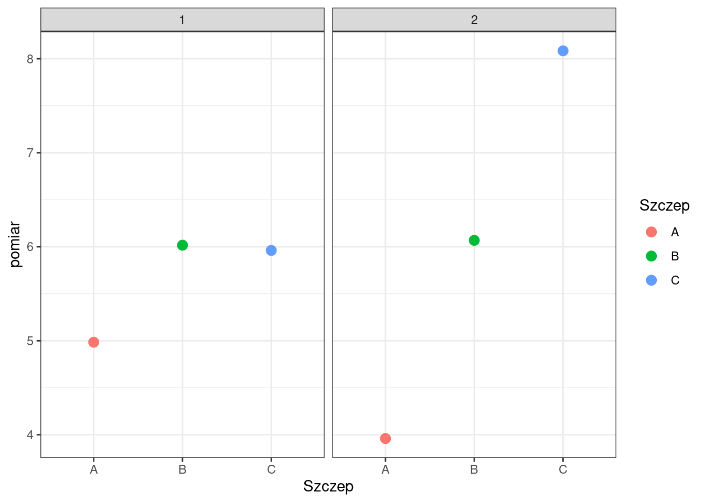
Możemy zastosować stat_smooth dla wszystkich danych.
geom_point można rozróżniać pod względem: color, shape, size, a geom_line pod względem: color i linetype.
p <- ggplot(data=dane3, aes(x = czas, y = pomiar, color = Szczep))
p + geom_point(size = 0.75) + stat_smooth(method = "lm")## `geom_smooth()` using formula 'y ~ x'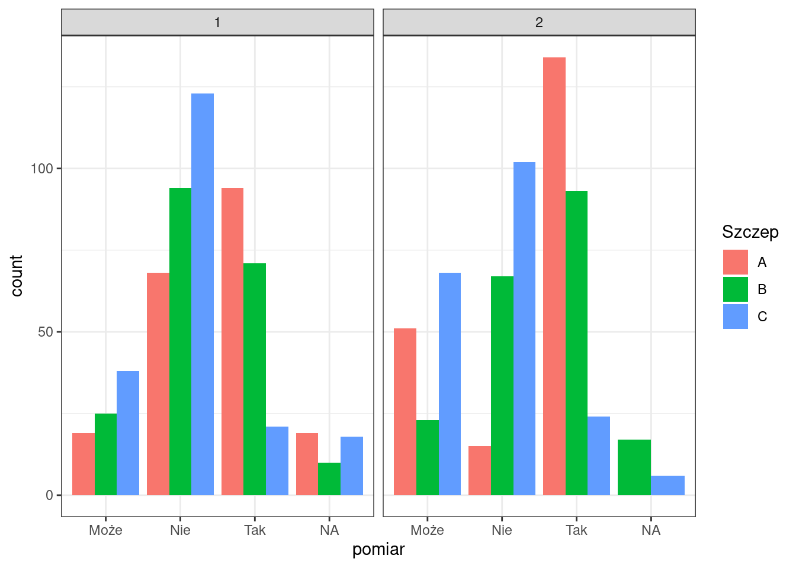
p + geom_point(size = 0.75) + stat_smooth(method = "lm") + facet_wrap(~Szczep)## `geom_smooth()` using formula 'y ~ x'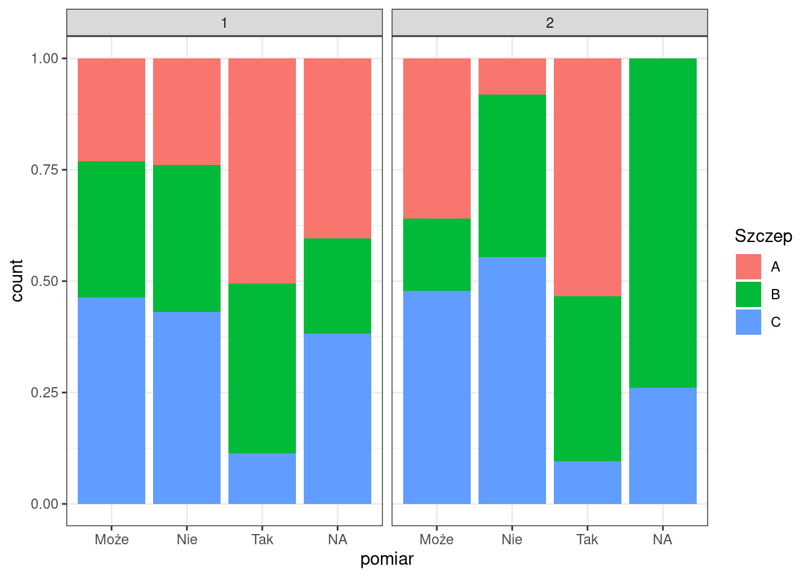
Do przedstawienia takich danych można też użyć boxplot.
p <- ggplot(data=dane3, aes(x=czas, group = plyr::round_any(czas, 10, floor), y=pomiar))
p + geom_boxplot()+facet_wrap(~Szczep)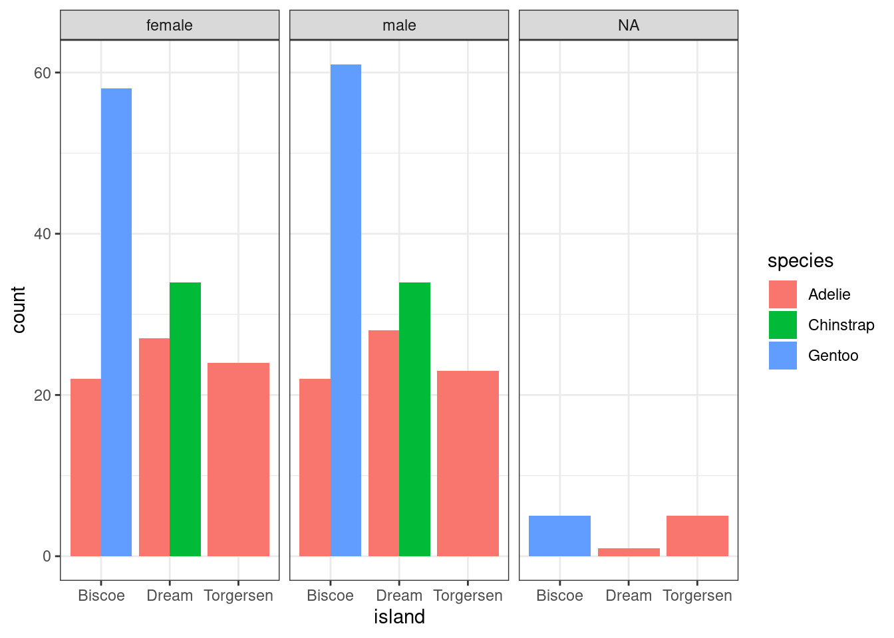
4.1.5.2 Jak poradzić sobie z nadmiarem punktów na wykresie (overplotting)?
Jednym z problemów podczas stosowania wykresów punktowych może być zbyt duża liczba punktów powodująca zacieranie się informacji.
W ggplot2 możemy skorzystać z kilku sposobów poradzenia sobie z “overplotting.” W przypadku danych ciągłych można wykorzystać parametr alpha pozwalający na ustawienie półprzezroczystych punktów albo wykorzystać punkty niewypełnione w środku - shape = 1:14.
Innym sposobem może być wykorzystanie geom_density2d, który wylicza gęstość w układzie dwuwymiarowym i zaznacza liniami na wykresie albo geom_bin2d , który pozwala zrobić dwuwymiarowy histogram, możliwa kotrola binwidth (trzeba podać wektor dwóch wartości).
Dla danych dyskretnych pomóc może wykorzystanie position="jitter", która pozwala losowo rozrzucić punkty albo zastosowanie parametru alpha oraz stat_sum - wielkość punktów zależy od ilości nakładających się punktów.
# przykładowe dane ciągłe
dane <- data.frame(x = rnorm(4000), y = rnorm(4000))
p <- ggplot(dane, aes(x = x,y = y))
p + geom_point()
# zastosowanie alpha
p + geom_point(alpha = 0.25)# puste punkty
p + geom_point(shape = 1)
# geom_density2d albo geom_bin2d()
p + geom_point()+geom_density2d(color = "red2")
p + geom_bin2d()
# można również użyć stat_density2d z innym geomem niż linia
p + stat_density2d(geom = "polygon", aes(fill = ..level..))
# linie widoczne na wykresach są wynikiem konwersji do pdf, nie będzie ich na wykresach zapisanych np. w formacie .tiff
p + stat_density2d(geom = "tile", contour = FALSE, aes(fill = ..density..))
p + stat_density2d(geom = "tile", contour = FALSE, aes(fill = ..density..))+
scale_fill_gradient(low = "lightyellow", high = "darkgreen")
p + stat_density2d(geom = "tile", contour = FALSE, aes(fill = ..density..))+
scale_fill_viridis_c()
p + stat_density2d(geom = "tile", contour = FALSE, aes(alpha = ..density..))
# zamiast kwadratów można użyć sześciokątów, wymaga zainstalowanie pakietu hexbin
library(hexbin)
p + stat_binhex()
# dane dyskretne
dane <- round(2*dane)
p <- ggplot(dane, aes(x = x,y = y))
p + geom_point()
p + geom_point(alpha = 0.05)
# wykorzystanie position = "jitter" i alpha
p + geom_point(position = "jitter", alpha = 0.3)
# z wykorzystaniem stat_sum
p + stat_sum()
# czasem pomóc może też zmiana skali na logarytmiczną
dane <- data.frame(x = rlnorm(1000), y = rlnorm(1000))
p <- ggplot(dane, aes(x = x,y = y))
p + geom_point()
p + geom_point()+scale_y_log10()+scale_x_log10()
4.1.5.3 Wykres wstążka (ribbon)
Użycie geom_ribbon wymaga wstępnego podsumowania danych np. przy użyciu dplyr - analogicznie jak dane1. W tym wypadku zmiennymi, pod względem których będziemy dzielić dane na grupy będą szczep i czas.
Półprzezroczystą wstążkę uzyskujemy dzięki parametrowi alpha.
library(dplyr)
summ <- dane3 %>% group_by(Szczep, czas) %>%
summarize(mean = mean(pomiar),
sd = sd(pomiar),
blad = sd/sqrt(length(pomiar)),
lower = mean-blad,
upper = mean+blad)## `summarise()` has grouped output by 'Szczep'. You can override using the `.groups` argument.p <- ggplot(data = summ, aes(x = czas, y = mean, color = Szczep, fill = Szczep))
p + geom_line() + geom_ribbon(aes(ymin = lower, ymax = upper), alpha = 0.25)
4.1.6 Kolory, osie, panele
4.1.6.1 Porównywanie - fill, color, shape
Porównanie kilku szczepów można zrobić w ten sam sposób, wybierając w aes - fill=Szczep albo color=Szczep (w zależności od geomu, fill pasuje do histogram i density, color do density, line, point, boxplot itd.)
W histogramie domyślnie dostaniemy słupki ustawione jeden na drugim, jeżeli chcemy słupki ustawione obok siebie należy ustawić parametr position="dodge".
W przypadku boxplot dla kilku cech można pod x podstawić Szczep - otrzymamy wykres zawierający po jednym boxplocie dla jednego szczepu.
Wybieram dane tylko dla warunków 1.
dane1_2 <- dane1 %>% filter(warunki == 1)
p <- ggplot(data = dane1_2, aes(x = pomiar))
# Histogram dla trzech szczepów
p + geom_histogram(aes(fill = Szczep, y = ..density..), binwidth = 0.5,
position="dodge")
# Gęstość dla trzech szczepów rozróżniona przez color
p + geom_density(aes(color = Szczep))
# Gęstość rozróżniona przez fill, półprzezroczystość uzyskujemy parametrem alpha
p + geom_density(aes(fill = Szczep), alpha = 0.25, size = 0.75)# Histogramy nałożone na siebie - wymaga ustawienia position = "identity"
p <- ggplot(data=dane1_2, aes(x = pomiar))
p + geom_histogram(aes(y = ..density.., fill = Szczep), binwidth = 0.75, alpha = 0.45, position = "identity")# Histogram "back to back" wymaga ustawienia w drugim geom_histogram ujemnego y
dane1_3 <- dane1 %>% filter(Szczep == "B", warunki == 1)
p <- ggplot(data = dane1_1, aes(x = pomiar))
p <- p + geom_histogram(aes(y = ..density.., fill = "dodgerblue3"), binwidth = 0.75)+
geom_histogram(data = dane1_3, aes(x = pomiar, y = -..density.., fill = "coral2"),
binwidth = 0.75)+
scale_fill_manual(name = "Szczep",
values = c("coral2" = "coral2", "dodgerblue3" = "dodgerblue3"),
labels = c("B","A"))
p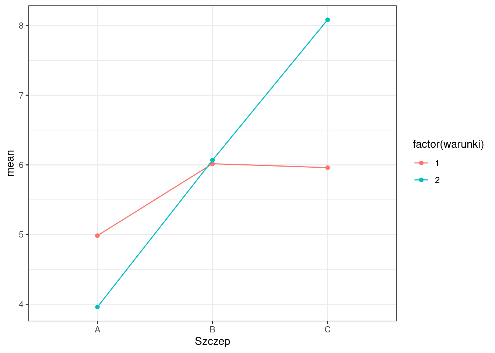
p + coord_flip()
# Boxplot dla każdego szczepu
p <- ggplot(data = dane1_2, aes(x = Szczep, y = pomiar))
p + geom_boxplot()
# Boxploty też mogą być kolorowe ;)
p + geom_boxplot(aes(color = Szczep))
4.1.6.2 Zmiana skali kolorów
Możemy zmienić domyślne kolory wykresu korzystając z funkcji scale_colour\fill_sth. Rodzaj funkcji zależy od rodzaju danych - ilościowe albo jakościowe.
Dla danych jakościowych można użyć: scale_color_grey - odcienie szarości, scale_colour_brewer - zawiera zestawy kolorów ze strony Color Brewer, scale_color_viridis_d - zawiera palety viridis, scale_color_hue - pozwala na wybranie kolorów korzystając z palety HCL. Można też ustawić własny zestaw kolorów korzystając z nazw kolorów R albo np. przez RGB, korzystając z scale_colour_manual
Dla danych ilościowych można wybrać: scale_color_gradient - gradient między dwoma kolorami, scale_color_gradient - gradient pomiędzy 3 kolorami, scale_color_gradientn - gradient pomiędzy dowolną liczbą kolorów albo scale_color_viridis_c
# Zmienne jakościowe
# Odcienie szarości
p <- ggplot(data = dane1_2, aes(x = pomiar))
p + geom_histogram(aes(fill = Szczep, y = ..density..), binwidth = 0.5)+
facet_wrap(~Szczep) + scale_fill_grey()
# można wybrać początek i koniec skali
p + geom_histogram(aes(fill = Szczep, y = ..density..), binwidth = 0.5)+
facet_wrap(~Szczep) + scale_fill_grey(start = 0.1, end = 0.6)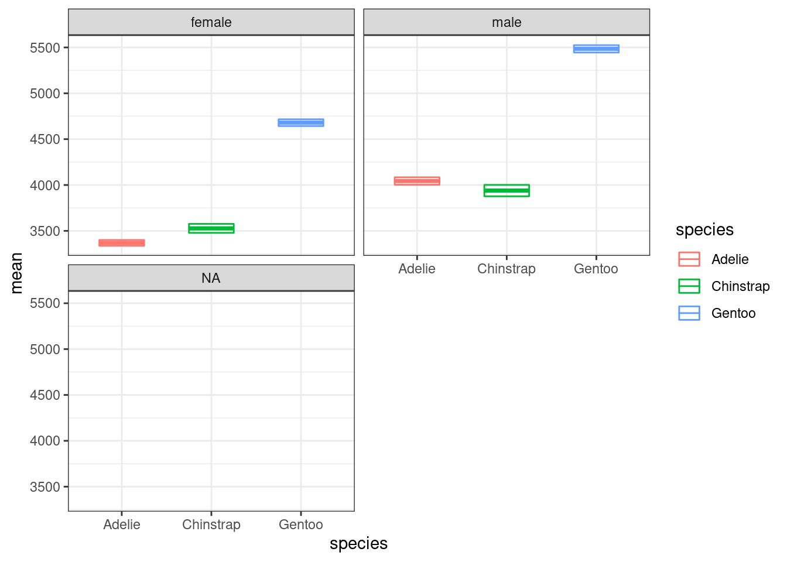
# skala ColorBrewer
library(RColorBrewer)
display.brewer.all()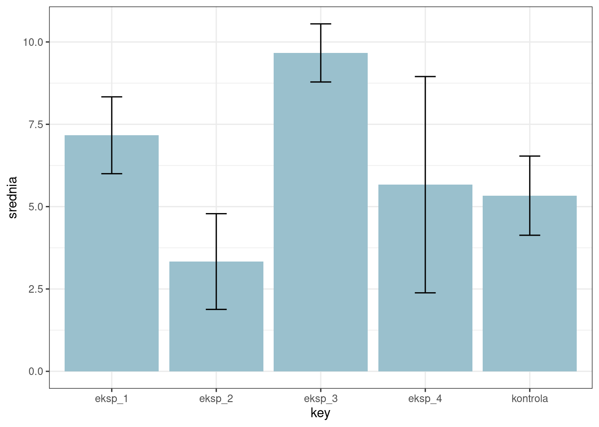
# z użyciem ColorBrewer
p <- ggplot(data = dane1_2, aes(x = pomiar))
p + geom_histogram(aes(fill = Szczep, y = ..density..), binwidth = 0.5)+
facet_wrap(~Szczep) + scale_fill_brewer()
p + geom_histogram(aes(fill = Szczep, y = ..density..), binwidth = 0.5)+
facet_wrap(~Szczep) + scale_fill_brewer(palette = "Set1")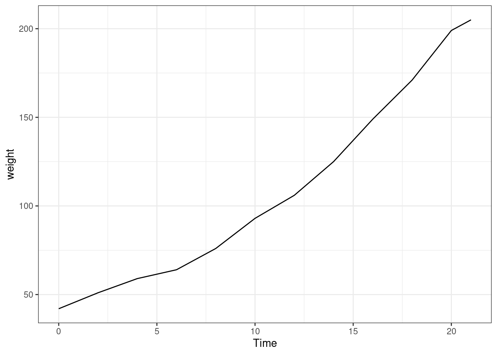
# z użyciem viridis, argument option przyjmuje wartości od A do H
p + geom_histogram(aes(fill = Szczep, y = ..density..), binwidth = 0.5)+
facet_wrap(~Szczep) + scale_fill_viridis_d(option = 'C')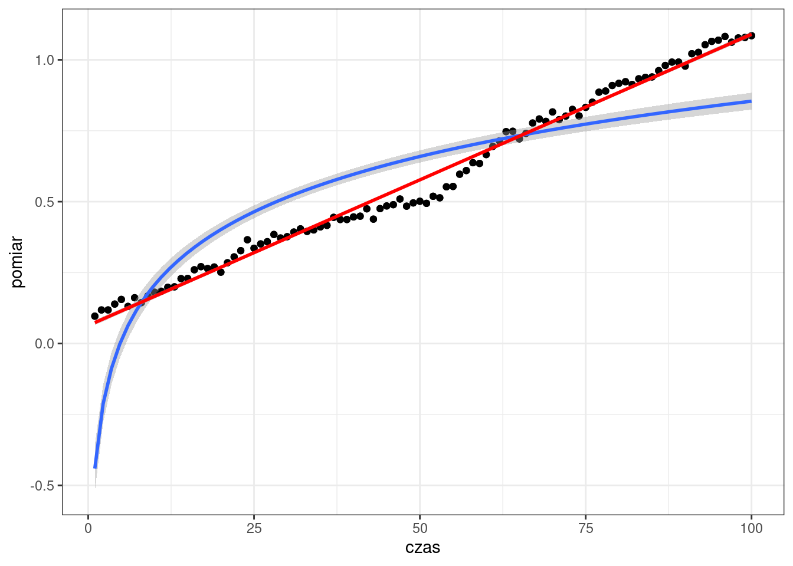
# zakres palety można modyfikować przy pomocy argumentów begin i end
p + geom_histogram(aes(fill = Szczep, y = ..density..), binwidth = 0.5)+
facet_wrap(~Szczep) + scale_fill_viridis_d(option = 'C', begin = 0.4)# skala z użyciem palety HCL - ustawiamy trzy argumenty: h(zakres barw), c(intensywność) i l(jasność)
p + geom_histogram(aes(fill = Szczep, y = ..density..), binwidth = 0.5)+
facet_wrap(~Szczep) + scale_fill_hue(h = c(160,320))p + geom_histogram(aes(fill = Szczep, y = ..density..), binwidth = 0.5)+
facet_wrap(~Szczep) + scale_fill_hue(c = 200)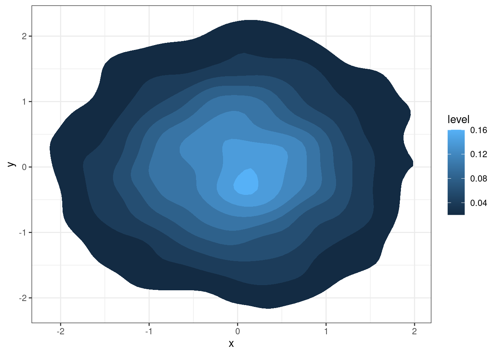
p + geom_histogram(aes(fill = Szczep, y = ..density..), binwidth = 0.5)+
facet_wrap(~Szczep) + scale_fill_hue(l = 85)# skala manualna
p + geom_histogram(aes(fill = Szczep, y = ..density..), binwidth = 0.5)+
facet_wrap(~Szczep) + scale_fill_manual(values = c("forestgreen", "dodgerblue", "coral"))# Zmienne ilościowe
# domyślny gradient
p <- ggplot(subset(dane1_2, pomiar < 10))
p <- p + geom_jitter(aes(x = Szczep, y = pomiar, color = pomiar), size = 3)
# dwa kolory
p + scale_color_gradient(low = "darkgreen", high = "gold")# trzy kolory - domyślnie założy, że wartość środkowa to zero, jeżeli jest inaczej to trzeba to podać w midpoint
p + scale_color_gradient2(low = "darkgreen", mid = "coral", high = "gold", midpoint = 6)# więcej kolorów
p + scale_color_gradientn(colours = c("green", "red", "yellow", "blue"))# ColorBrewer
p + scale_color_distiller(palette = 4)# viridis
p + scale_color_viridis_c(option = 'A')p + scale_color_viridis_c(option = 'D')p + scale_color_viridis_c(option = 'H')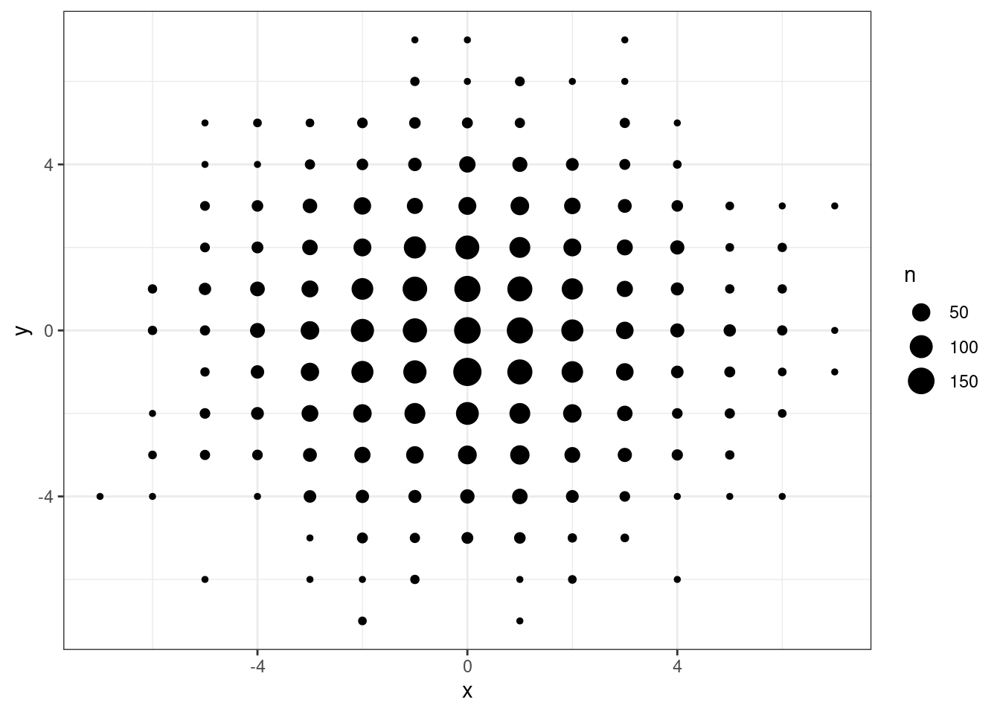 Analogicznie do kolorów można ustawiać skale dotyczące kształtu punktów, stylu linii itp.
4.1.6.3 Podział wykresu na panele
Innym sposobem na rozróżnianie danych jest użycie paneli (facet).
Dzielimy wykres na części pod względem zmiennej np. Szczepu używając facet_wrap albo facet_grid
facet_grid - rozmieści wykresy w tabeli według jednej lub dwóch zmiennych podanych w formule np. zmienna1 ~ zmienna2
facet_wrap - stworzy “wstążkę” wykresów, końcową liczbę kolumn/wiersz można ustawić argumentami ncol/nrow. W formule po + można dodawać kolejne zmienne np. ~ zmienna1 + zmienna2
p <- ggplot(data = dane1_2, aes(x = pomiar))
p + geom_histogram(aes(y = ..density..), binwidth = 0.5, position = "dodge")+
facet_wrap(~Szczep, ncol = 1)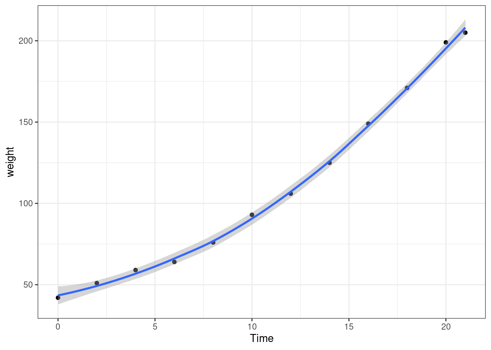
p + geom_density(aes(color = Szczep)) + facet_wrap(~Szczep, ncol = 1)
Oba sposoby można ze sobą dowolnie łączyć.
Analizujemy dane pod względem szczepu i warunków.
p <- ggplot(data = dane1, aes(x = pomiar))
p + geom_histogram(binwidth = 0.5, aes(fill = factor(warunki)), position = "dodge")+
facet_wrap(~Szczep, ncol = 1)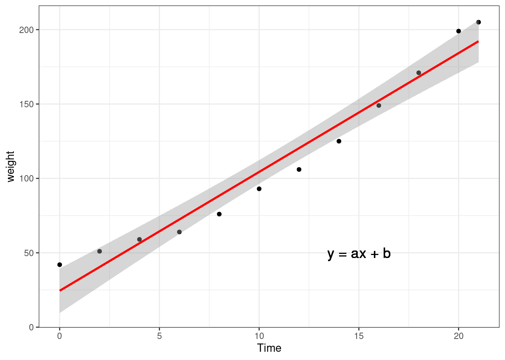
p + geom_density(aes(color = Szczep)) + facet_wrap(~ warunki, ncol = 2)# Histogram podzielony pod względem szczepu i warunków - facet_grid
p + geom_histogram(binwidth = 1) + facet_grid(Szczep ~ warunki)# Podobny efekt do facet_frid można osiągnąć stosując facet_wrap z więcej niż jednym warunkiem
# Kolejne warunki dodaje się znakiem +
p + geom_histogram(binwidth = 1) + facet_wrap(~Szczep + warunki, ncol = 2)# Osie nie muszą być jednakowe dla wszystkich części
p + geom_histogram(binwidth = 1) + facet_grid(Szczep ~ warunki, scales = "free")# Dzielić na części dzięki facet można każdy typ wykresu
p <- ggplot(data = dane1, aes(x = Szczep, y = pomiar))
p + geom_boxplot(aes(color = Szczep)) + facet_wrap(~ warunki)# Boxploty można również rozmiescić według jednego czynnika, a pokolorować według drugiego
p + geom_boxplot(aes(color = factor(warunki)))4.1.6.4 Zmiana skali, osi, obracanie wykresu
ggplot2 domyślnie dobiera takie parametry osi, żeby zmieściły się wszystkie dane, ale można je zmieniać używając scale_x_continuous albo scale_y_continuous.
Jeżeli chcemy tylko zmienić limity osi można to zrobić funkcją xlim i ylim.
Trzeba pamiętać, że po zmianie limitów osi najpierw zostaną usunięte wartości, które się nie mieszczą, a potem policzone statystyki, więc takie wykresy jak geom_boxplot, stat_smooth, stat_summary i inne mogą ulec zmianie. Jeżeli chcemy tego uniknąć należy zamiast osi zmieniać układ współrzędnych - coord_cartesian(xlim, ylim).
Przy ich pomocy możemy zmienić np. parametry:
* limits - miejsce startu i końca osi np limits = c(1,10)
* name - nazwa osi
* breaks - miejsca “tick marks”
* labels - nazwy “tick marks”
Podstawowe transformacje osi to scale_y_log10, scale_y_reverse, scale_y_sqrt.
Oś % - należy wpisać labels=percent w scale oraz załadować pakiet scales.
Jeżeli chcemy obrócić wykres o 90 stopni możemy użyć funkcji coord_flip.
# Zmiana osi na przykładzie boxplot
p <- ggplot(data = dane1_2, aes(x = Szczep, y = pomiar))
p <- p + geom_boxplot()
# Ustawienie startu i końca osi oraz miejsc podziału
p + scale_y_continuous(limits = c(0,15), breaks = 0:15)
# Miejsca podziału nie muszą być w równych odstępach i mogą być dowolnie nazwane
p + scale_y_continuous(limits = c(0,15), breaks = c(1,4,7,15),
labels = c("mało", "lepiej", "ok", "za dużo"),
name = "Coś")
# Wykres obrócony
p + scale_y_continuous(limits = c(0,15), breaks = c(1,4,7,15),
labels = c("mało", "lepiej", "ok", "za dużo"),
name="Coś") + coord_flip()
# Skala logarytmiczna
p + scale_y_log10(limits = c(1,15), breaks = 1:15)
# Wykres "do góry nogami"
p + scale_y_reverse()
library(scales)
# Oś procentowa
p <- ggplot(data = dane1_1, aes(x = pomiar))
p + geom_histogram(binwidth = 0.5, aes(y = ((..count..)/sum(..count..))))+
scale_y_continuous(labels = percent, name = "Procent komórek")
4.1.7 Motyw (theme)
W pakiecie ggplot2 jest dostępnych kilka różnych motywów. Domyślnie ustawiony jest theme_grey, inne dostępne to theme_bw, theme_minimal, theme_classic, theme_linedraw, theme_light. W pakiecie ggthemes znajdują się dodatkowe wersje motywów, nawet (o zgrozo) theme_excel ;) Inny pakiet zawierający gotowe motywy to ggthemr - można go pobrać z GitHub.
Tytuł do wykresu możemy dodać korzystając z funkcji ggtitle. Nazwy osi też można szybko zmienić przy pomocy xlab i ylab.
p <- ggplot(data = dane1, aes(x = pomiar))
p <- p + geom_histogram(binwidth = 0.5, aes(fill = factor(warunki)), position = "dodge")+
facet_wrap(~Szczep, ncol = 1)
p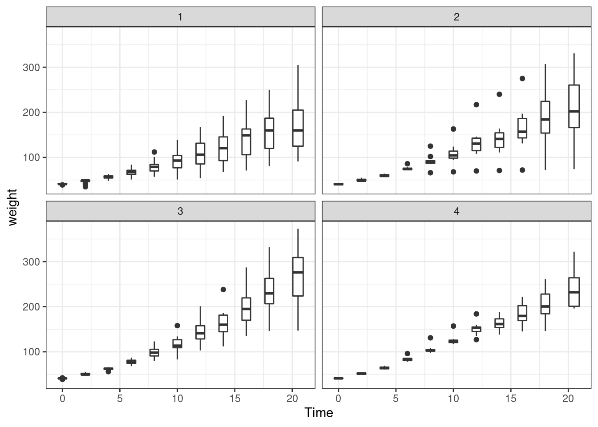
p + theme_bw()
p + theme_classic()p + theme_minimal()p + ggtitle("Tytuł") + xlab("Rodzaj pomiaru")
Legendę wykresu można modyfikować przy pomocy guide_legend wewnątrz funkcji scale_fill_discrete , scale_colour_discrete itp. Dostępne parametry to m.in. title, title.position, label.position, direction, nrow i ncol legendy. Modyfikacje są możliwe też bezpośrednio w funkcji theme albo samodzielnie ustawiając przez scale_color_manual.
p + scale_fill_discrete(guide = guide_legend(title = "Warunki",
title.position = "left",
label.position = "bottom", ncol = 2))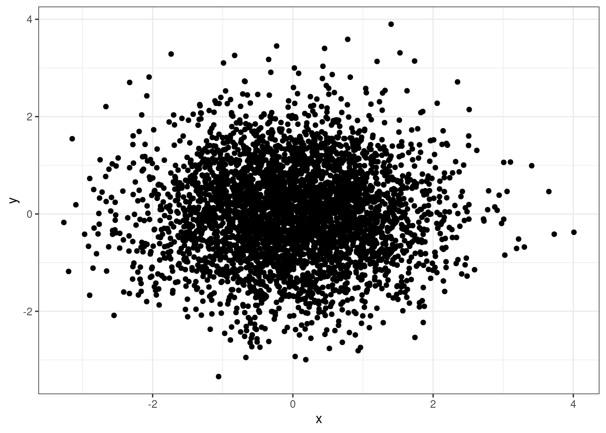
Można również modyfikować osobno każdy element wykresu np. czcionkę, kolor, linie, tło itd. przy pomocy funkcji theme, dużo przykładów znajduję się na stronie.
Można modyfikować jednocześnie wszystkie elementy danego rodzaju np. tekst przy pomocy text = element_text() albo pojedyncze części wykresu np. tytuł - plot.title=element_text().
p + theme(text = element_text(size = 22, face = "italic", color = "darkblue"))
p + ggtitle("Tytuł wykresu")+theme(plot.title = element_text(color = "red",
face = "bold", size = 30, angle = 350, hjust = 0.2, vjust = 0.8))p + theme(panel.background = element_rect(fill = "lightyellow"),
panel.grid.major = element_line(color = "snow4"),
strip.background = element_rect(fill = "lightblue3"))
Jeżeli chcemy przygotować kilka pasujących do siebie wykresów możemy zapisać swój motyw i potem dodawać go do kolejnych wykresów.
motyw <- theme(panel.background = element_rect(fill = "lightyellow"),
panel.grid.major = element_line(color = "snow4"),
strip.background = element_rect(fill = "lightblue3"))
p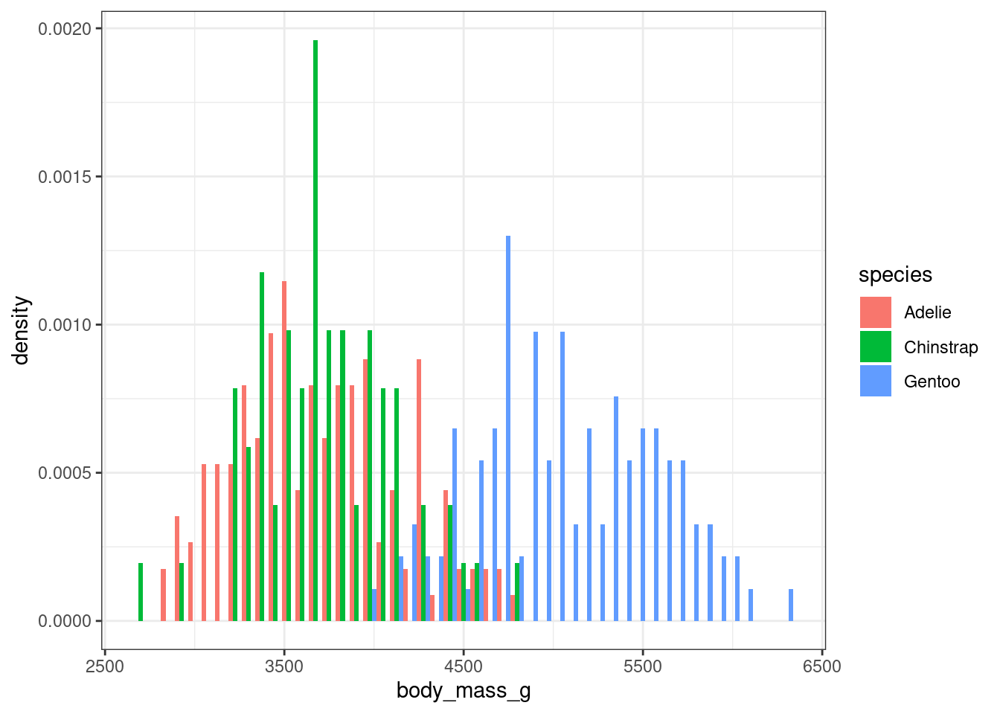
p + motyw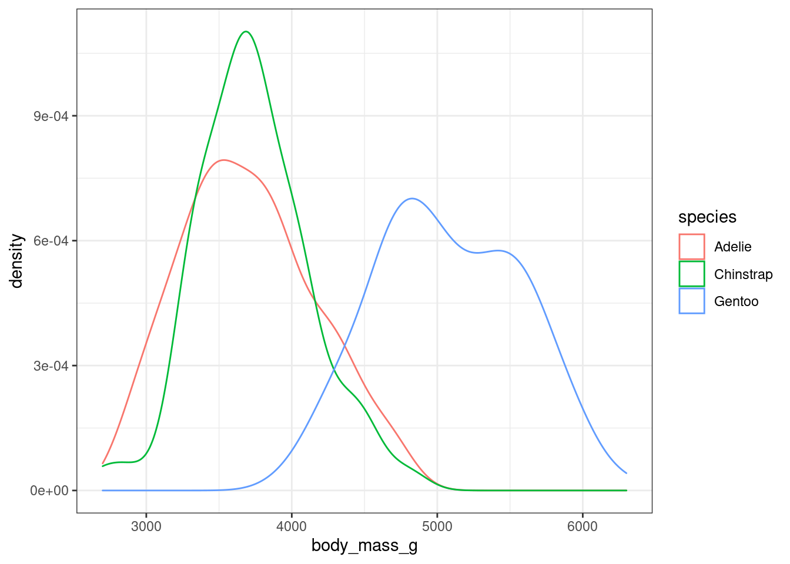
4.1.8 Różne
4.1.8.1 Łączenie wykresów
Pakiet ggplot2 jest oparty o system wyświetlania kontrolowany przez pakiet grid (inny niż grafika z podstawowego R). Korzystając z funkcji viewport można z dużą dokładnością rozmieścić kilka wykresów różnych rozmiarów obok siebie, jeden na drugim itp.
W funkcji viewport ustawiamy parametry width i height oznaczające wymiary wykresu. Wykres zajmujący całą powierzchnię ma wymiary 1x1 oraz x i y oznaczające współrzędne środka wykresu np. x=0.5, y=0.5 da wykres umiejscowiony na samym środku.
Dużo łatwiejszym sposobem jest wykorzystanie pakietu patchwork. Pozwala on na ułożenie wykresów na jednej stronie tlyko przy użyciu +, | i /. Można też dokładnie ustalać rozmieszczenie wykresów, więcej na stronie autora pakietu
# Przypisujemy wykresy do zmiennych
p1 <- ggplot(data=dane1, aes(x=pomiar))
p1 <- p1 + geom_density(aes(color=Szczep))+facet_wrap(~warunki, ncol=2)
p2 <- ggplot(data=summ, aes(x=czas, y=mean, color=Szczep, fill=Szczep))
p2 <- p2 + geom_line()+geom_ribbon(aes(ymin=lower, ymax=upper),alpha=0.25)
p3 <- ggplot(mtcars) + geom_boxplot(aes(gear, disp, group = gear))
# z wykorzytsaniem patchwork
library(patchwork)
p1 + p2 + p3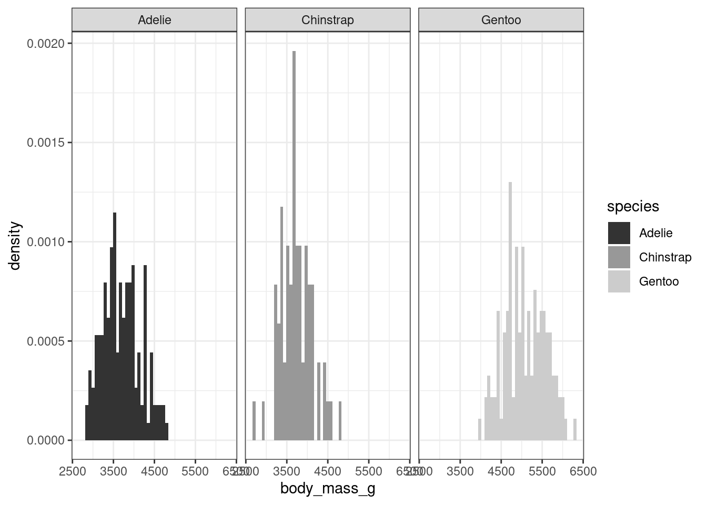
p1 | p2 / p3
(p1 | p2 )/ p3(p1 | p2 )/ p3 + plot_layout(guides = 'collect')layout <- "
##BBBB
AACCCC
AACCCC
"
p1 + p2 + p3 +
plot_layout(design = layout)
# Z wykorzystaniem pakietu grid
library(grid)
p1 <- p1 + theme(text=element_text(size=10))
p2 <- p2 + theme(text=element_text(size=10), legend.position="bottom")
# Ustawiamy parametry viewportóW
vp1 <- viewport(width=1, height=0.5, x=0.5, y=0.75)
vp2 <- viewport(width=0.4, height=0.5, x=0.2, y=0.25)
vp3 <- viewport(width=0.6, height=0.5, x=0.7, y=0.25)
# Wyświetlamy wykresy w ospowiednich viewportach
print(p1, vp=vp1)
print(p2, vp=vp2)
print(p3, vp=vp3)4.1.8.2 Ten sam wykres różne dane
Istnieje kilka sposobów na przygotowanie kilku takich samych wykresów, różniących się jedynie danymi.
Można oczywiście ręcznie podmienić wartość parametru data na inny albo skorzystać z wbudowanego w pakiet ggplot2 operatora - %+%.
Alternatywą jest też napisanie własnej funkcji przygotowującej konkretny wykres. Zaletą tego rozwiązania jest możliwość wpisania do funkcji odpowiednich argumentów dostosowujących wykres do konkretnej sytuacji.
# Przykładowe zestawy danych
a <- data.frame(x = rnorm(1000))
b <- data.frame(x = rlnorm(1000))
c <- data.frame(x = runif(1000, 0, 5))
# Przygotujemy wykres składajacy się z kilku elementów dla danych a
p <- ggplot(data = a, aes(x = x))
p <- p + geom_histogram(binwidth = 0.25, fill = "blue4", aes(y = (..count../sum(..count..))))+
scale_y_continuous(labels = percent, name = "Procent")+
xlab("Wartość")+
ggtitle("Przykładowy rozkład")+
theme(panel.background=element_rect(fill = "white"), text = element_text(size = 14),
axis.text = element_text(color = "red4"))
p
# taki sam wykres dla danych b
p %+% b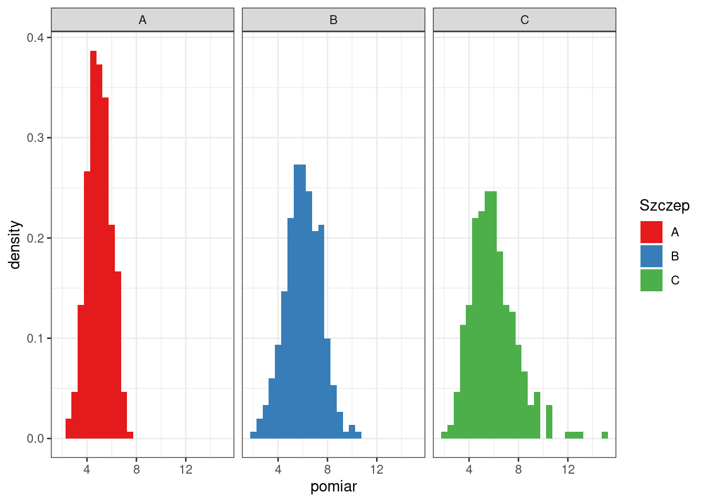
# i c ;)
p %+% c4.1.9 Rozszeżenia ggplot2
W ostatnich latatach powstało bardzo wiele pakietów rozbudowujących możliwości ggplot2. Część z nich została już wspomniana wcześniej np. ggbeeswarm lub patchwork. Tutaj znajdą się inne, które również mogą okazać się przydatne. Większość dobrze udokumentowanych pakietów można znaleźć na stronie ggplot2 extensions - gallery.
4.1.9.1 Pakiet GGally
Pakiet GGally stanowi rozszeżenie ggplot2, zawiera kilka szablonóe i pozwala na stworzenie wykresów niedostępnych w wersji podstawowej np. macierz korelacji, wykres pokazujący sieć albo macierz wykresów dla ramki danych.
4.1.9.1.1 Macierz wykresów - ggpairs
Funkcja ggpairs pozwala na szybką analizę danych. Jej argumentem jest ramka danych i dla każdej pary zmiennych zostanie narysowany wykres pozkazujący zalezność pomiędzy nimi. Wykresy są inne w zależności od rodzaju zmiennych - liczbowe lub kategoryczne. Dla pary zmiennych liczbowych zostanie narysowany wykres rozrzutu i obliczony współczynnik korelacji. Dla pary mieszanej (liczbowo-kategoryczna) narysuje wykres pudełkowy i histogram, dla dwóch zmiennych kategorycznych wykresy słupkowe. Rodzaje rysowanych wykresów można zmieniać, można też do macierzy dodać własny wykres.
dane <- data.frame(liczb_1 = sort(rnorm(300, 2)), liczb_2 = sort(rlnorm(300, 1, 0.5)),
kategoria_1 = rep(c("A","B","C"), each=100),
kategoria_2 = sample(c("Tak","Nie"),300, replace=TRUE))
library(GGally)## Registered S3 method overwritten by 'GGally':
## method from
## +.gg ggplot2ggpairs(dane)## `stat_bin()` using `bins = 30`. Pick better value with `binwidth`.## `stat_bin()` using `bins = 30`. Pick better value with `binwidth`.
## `stat_bin()` using `bins = 30`. Pick better value with `binwidth`.
## `stat_bin()` using `bins = 30`. Pick better value with `binwidth`.
# zmiana rodzaju wykresu np. górny panel pokaże wykres gęstości zamiast korelacji
# i kropkowy zamiast boxplota
ggpairs(dane, upper=list(continuous="density", combo="dot"))## `stat_bin()` using `bins = 30`. Pick better value with `binwidth`.
## `stat_bin()` using `bins = 30`. Pick better value with `binwidth`.
## `stat_bin()` using `bins = 30`. Pick better value with `binwidth`.
## `stat_bin()` using `bins = 30`. Pick better value with `binwidth`.
# wykres pokolorowany według jednej z kategorii
ggpairs(dane, mapping = ggplot2::aes(color=kategoria_1))## `stat_bin()` using `bins = 30`. Pick better value with `binwidth`.
## `stat_bin()` using `bins = 30`. Pick better value with `binwidth`.
## `stat_bin()` using `bins = 30`. Pick better value with `binwidth`.
## `stat_bin()` using `bins = 30`. Pick better value with `binwidth`.
4.1.9.1.2 Macierz korelacji
Tworzenie macierzy korelacji jest opisane w dalszej części z wykorzystaniem pakietu corrplot, ale możliwe jest też użycie ggplot2.
dane <- data.frame(a=sort(rnorm(100)), b=sort(rnorm(100)), c=rnorm(100), d=rlnorm(100), e=runif(100),
f=sort(runif(100)), g=sort(rexp(100), decreasing=TRUE))
ggcorr(dane)
# z wpisanymi wartościami korelacji
ggcorr(dane, label=TRUE, label_color="black", label_round=2)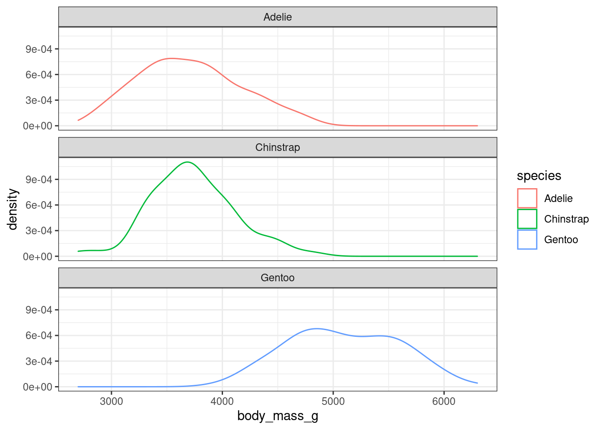